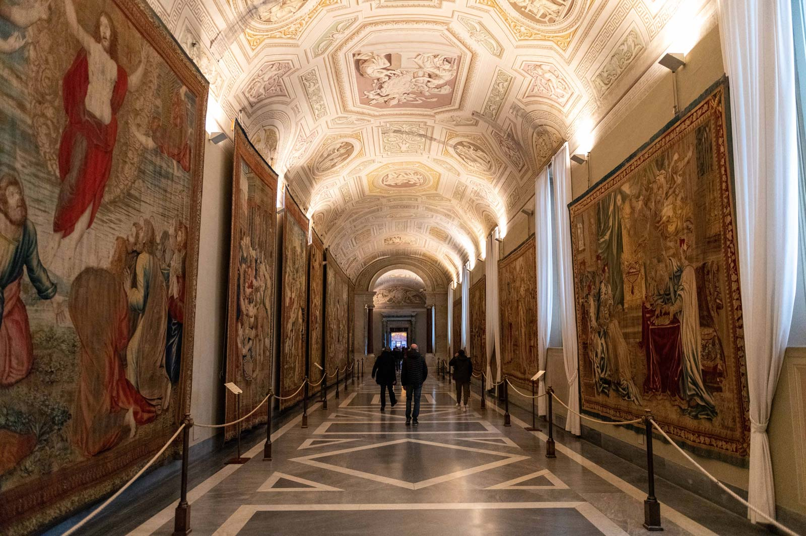
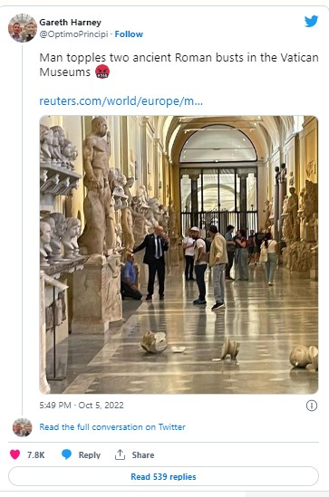

The 65-year-old tourist reportedly told museum staff he wanted to see the Pope before throwing the Roman busts to the ground
A 65-year-old man has been arrested after toppling two ancient busts in the Vatican Museums on Wednesday. The artefacts have sustained moderate damage and have been taken to the museum's in-house restoration lab for repair, raising concerns about the institution's security as visitor numbers begin to return to pre-Covid levels.
The man, an American citizen who was born in Egypt, was stopped by the Vatican police in the Chiaramonti Museum—a long corridor lined with statues and busts—shortly after he threw the busts to the ground, according to the Adnkronos news agency. The visitor—who has previously been reprimanded in the US for gross indecency—was in Rome on a three-day trip and told officials that he wanted to see the Pope. He has now been handed over to the Italian authorities.
Pictures on social media show the artefacts lying on the floor; the base of one of them appears to have become detached. Representatives of the museum have confirmed that the busts are "minor works" to Il Messaggero, however it is estimated that it will cost €15,000 and require between 300 and 350 hours of work to repair them, Adnkronos reports. It is unlikely that they will return to the condition they were in before the incident.
The Vatican Museums, which registered on average more than six million annual visitors before the pandemic, was listed by The Art Newspaper as the world's third most visited museum in 2019. Visitor numbers to the museum are likely to surge with the approach of the Catholic church's 2025 Jubilee Year, which is expected to draw 30 million pilgrims. The Vatican Museums were recently fitted with a complex and sophisticated system of video cameras designed to ensure the safety of its works, La Repubblica reports.